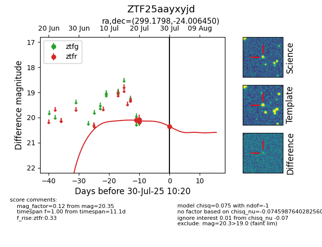

Target ZTF25aayxyjd at 2025-07-30 10:20, see:
FINK: fink-portal.org/ZTF25aayxyjd
Lasair: lasair-ztf.lsst.ac.uk/objects/ZTF25aayxyjd
ALeRCE: alerce.online/object/ZTF25aayxyjd
alt names
ZTF25aayxyjd (ztf,fink)
coordinates:
equatorial (ra, dec) = (299.1798,-24.00645)
galactic (l, b) = (17.3165,-24.45457)
photometry
last ztfr=20.35
4 ztfr detections
